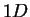

In this window, the user can choose stimulus and response input from the top left panel of the window. In this panel, there are two list boxes for stimulus files and response files. The list boxes display the files under current directories of the stimulus and the response. The user can interactively update these directories for stimulus and response list boxes by clicking Update Stim Path or Update Resp Path buttons. When user clicks on a list item in the stimulus or the response list box, one of the following happens:
To select multiple data sets, hold down the CTRL or Shift key while clicking selections. After selecting stimulus files from the stimulus list box and response files from the response list box, the user can click Add button to check if the file type is allowed and save them as global variables for later analysis. They will show on the show data pairs list box if data format is OK. The user can remove the selected data files by pressing Remove button.
After the selection has been done, the user needs to specify data parameters
in the right bottom panel of the window by clicking
the pop-up menu Please Choose Spatial Domain and by filling
in the editable text field. These parameters
include data sampling rate (in Hz), dimensionality of spatial domain,
and low and high frequency (in Hz) for  spatial domain.
For the auditory example, data sampling rate is Hz,
the spatial domain is a frequency band so the dimensionality
of the spatial domain is set as .
The low frequency is
Hz and the high frequency is  Hz since the frequency band expands
from to
Hz since the frequency band expands
from to  Hz in the above description of the
auditory experiment. For the visual example,
the data sampling rate is Hz. The dimensionality of spatial domain is
Hz in the above description of the
auditory experiment. For the visual example,
the data sampling rate is Hz. The dimensionality of spatial domain is
 since stimulus is represented as position at time
since stimulus is represented as position at time  .
.